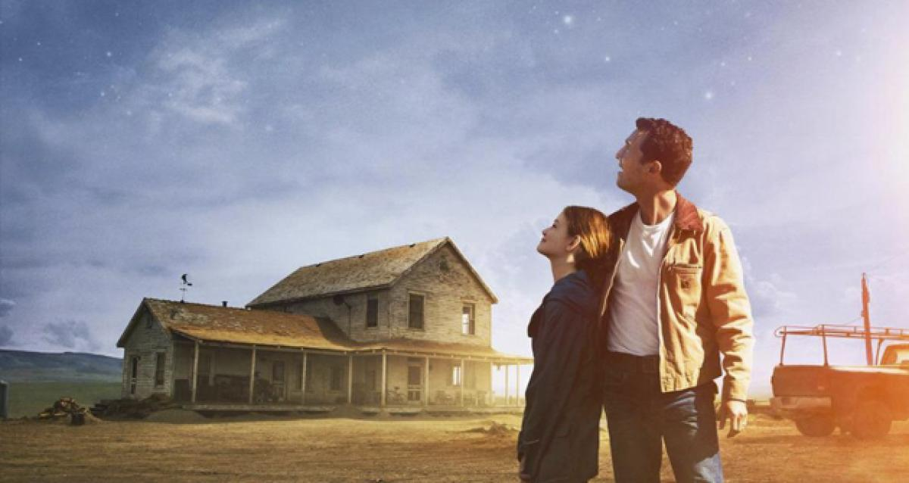
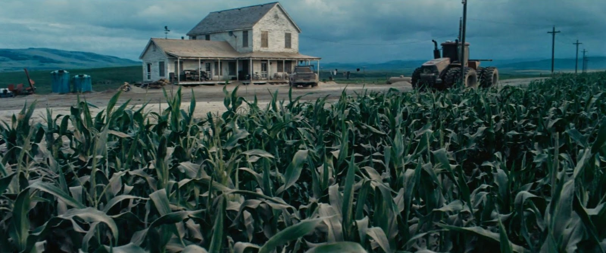

Nave espacial de Cooper cerca del agujero negro Cooper Flotando a la deriva en el espacio Cooper y sus amigos en uno de los supuestos planetas habitables La nave de Cooper a punto de pasar por un agujero de gusano Cooper y Murph hablando con el Dr. Brand Cooper y Murph sincronizando los relojes antes de despedirse

Cooper y Murph mirando hacia el firmamento

Granja de la familia de Cooper